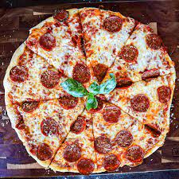

Pepperoni Pizza

Pizza is an extremely popular food eaten by many throughout the world. It is usually circular in shape and cut into
pieces along the center. However, pizza can take on any shape and be cut in any way. A pizza can have many different
types of toppings but pepperoni is one of the more popular toppings.
Ingredients
- 1 pound refridgerated pizza dough
- 1/4 cup pizza sauce
- 1/2 cup shredded mozzarella cheese
- 1/2 cup sliced pepperoni
Directions
-
Place pizza stone on grill directly over wood fire. You may need to begin by spreading out the wood if the flames are too tall.
Roll out the pizza dough to desired thickness. Place it on the pizza stone and cook 10 minutes on one side until golden.
-
Remove from the fire and on the cooked side, spread the pizza sauce in an even layer over dough leaving about a half inch around the rim of the pizza dough bare.
Sprinkle mozzarella cheese evenly on top of the sauce, followed by the pepperoni slices.
-
Place uncooked side down, back on the pizza stone. Cover with a foil tent and cook until cheese has melted, about 10 minutes more.
Transfer pizza to a cutting board and let cool slightly before cutting and serving.